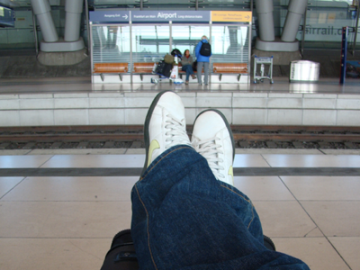

Bye US, Hello Prague
I’m now safely back in Heidelberg after a wonderful us-trip. The flights went smoothly with only little delay and even though the pulled me out as one of their ‘victims’ in the customs in Frankfurt, the let me through when they saw that the only laptop I had on me had a danish keyboard... what do you think, I wouldn’t cheat - I’m danish you know;)
Well, before I got on the plain(s) for Germany I had to spend the last week in Tucson, which was of course not hard at all. Monday to wednesday I mostly worked - after all that was the purpose of the trip and the ‘working-conditions’, i.e. the fact that you are not disturbed by the usual stuff and your supervisor/collaborators are close to you and 80-90% dedicated (which is more than you usually get because of other students, postdocs etc.), were really good -  as they have bin all the time I was in the US. Thursday which was my last full day in the US I went out to buy something for my girlfriend. I think she deserves a present now that she puts up with me ‘bragging’ about traveling etc. I found some skincare-stuff I know she likes and it was suppose to be a surprise, but when I talked to her today she told me that she wanted to buy the same stuff I bought for her (among other things) so I had to tell her - so much for a surprise. But she promised to be happy when she gets it so that’s good! I bought the stuff in a salon/spa and while I was deciding what to buy for her, I bought myself a haircut which was really needed - nice to get rid of the helmet :)
as they have bin all the time I was in the US. Thursday which was my last full day in the US I went out to buy something for my girlfriend. I think she deserves a present now that she puts up with me ‘bragging’ about traveling etc. I found some skincare-stuff I know she likes and it was suppose to be a surprise, but when I talked to her today she told me that she wanted to buy the same stuff I bought for her (among other things) so I had to tell her - so much for a surprise. But she promised to be happy when she gets it so that’s good! I bought the stuff in a salon/spa and while I was deciding what to buy for her, I bought myself a haircut which was really needed - nice to get rid of the helmet :)
Well after I bought the stuff for Mette I decided to buy myself a small present as well (besides the haircut) and I knew sort-of where a shopping centre with a mac store was. The address was at skyline drive... anything special about that? Well I didn’t take notice of the name before I started biking up there. And of course the skyline road is up the mountain so you can see the Tucson skyline - doh! Luckily it was a bit clouded thursday so it was only REALLY hot. I actually considered to turn around, but you know that I have become a Mac snob the last couple of years so I continued - and prevailed! When I came to the mall I got some lunch and bought a protection cover/film set for my ipod.
Thursday night I had tickets for this weeks BIG THING. A basketball match in the Pac-10 conference (which is the pacific part of the NCAA university US basketball league) between The Arizona Wildcats and the California Bears. It was really an experience. Almost 15000 screaming Americans in the McKale center all cheering for the Wildcats were quite an experience . I LOVED IT!!! If I lived there I think the is a good chance that I would have a season ticket;)
After the game I went home to get a good nights sleep before going back to Germany friday/saturday. As mentioned everything went well (the 1 hour delay in Tucson was luckily not enough to mess up the ‘plain-shift’ in L.A.) and I was here 1230 yesterday. And even though I loved the US its good to be back... but that’s only for a short while ‘cause tomorrow morning I’m leaving for Prague with the rest of the IMPRS 4th generation guys. And by the way - I owe all of you a great thank you for the warm welcome home you gave me yesterday. It was awesome getting back to that THANK YOU!!
Well ... leaving for Prague tomorrow so should get some sleep, so I’ll end the entry here. Don’t know if I’m to busy having fun to blog the next week... we’ll see.
Cheers
IMPRS me Mario and Mauricio!

US - I’ll see you soon (I hope)
Sunday, 8 March 2009
